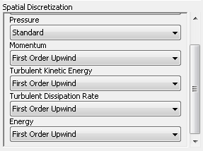

|
|
3. Composite GeometryApril 9, 2015 • Computational Science and Engineering |
Contents
Exercise 3.3: Mixing Tee Redux (In 3D)Finally, we will return to the original problem in 3D with faster inlet flow rates. 
|
Preprocessing
|
Geometry
|


Mesh
|
 .
.
Setup
|
|
You can do everything the same as before with two exceptions: adding a turbulence model because the resulting flow is higher (although not quite formally turbulent, there are likely to be pockets of turbulence in the flow); and specifying the behavior and quantities of that turbulence model's equations. MeshYou need to specify the numerical treatment of the turbulent model terms.

ModelsAdd the energy and turbulence equations into the model to be solved.
Solution MethodsYou need to specify the numerical treatment of the turbulent model terms. Finish your simulation and compare the results to the 2D case. The outlet velocity profiles at the outlet should be similar. |

Credits
Sparsh Chadha, Neal Davis, and Zhongzhong Zhang developed these materials for Computational Science and Engineering at the University of Illinois at Urbana–Champaign.
 This content is available under a Creative Commons Attribution-NonCommercial 4.0 Unported License.
This content is available under a Creative Commons Attribution-NonCommercial 4.0 Unported License.